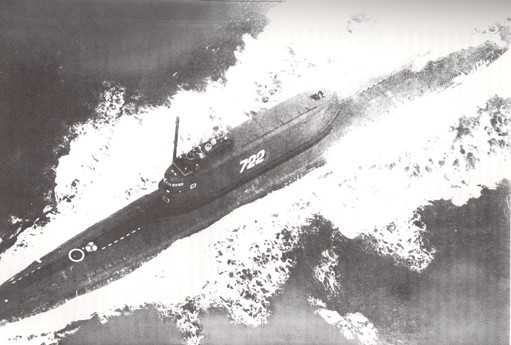
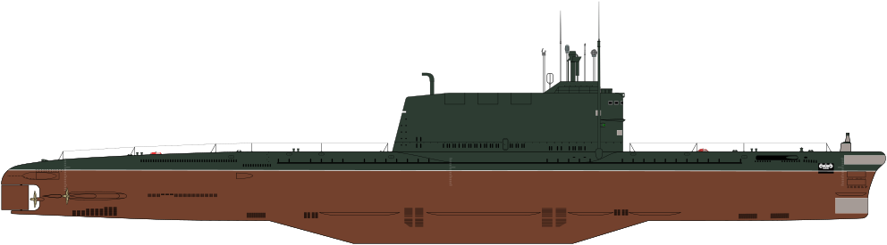

Б-103, К-129 — советская дизель-электрическая подводная лодка проекта 629А. Основное вооружение — ракетный комплекс Д-4 с тремя баллистическими ракетами Р-21 в ограждении рубки (первая советская БРПЛ подводного старта). Входила в состав Тихоокеанского флота СССР. Командир — капитан первого ранга В. И. Кобзарь.
Подводная лодка. Номера меняли перед каждым походом
Затонула приблизительно 7—8 марта 1968 года в северной части Тихого океана, в точке с координатами 40°06′ с. ш. 179°57′ з. д.HGЯO, на глубине порядка 5600 м. Погиб весь экипаж в составе 98 человек.
12 августа 1974 года в результате операции ЦРУ, известной как проект «Азориан», при помощи специально сконструированного оборудования (корабль «Гломар Эксплорер» и спецдок с устройством подводного захвата корпуса лодки) была поднята носовая часть подводной лодки.
Гольф 2 - схема